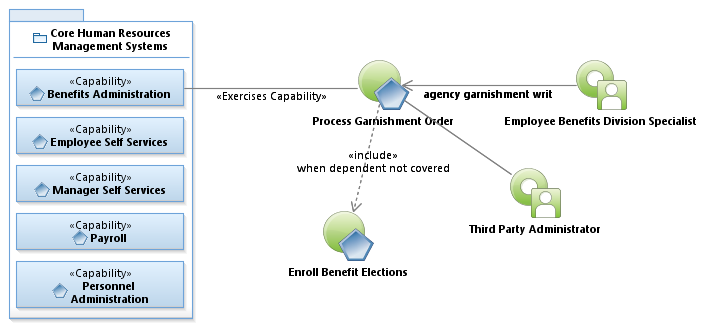
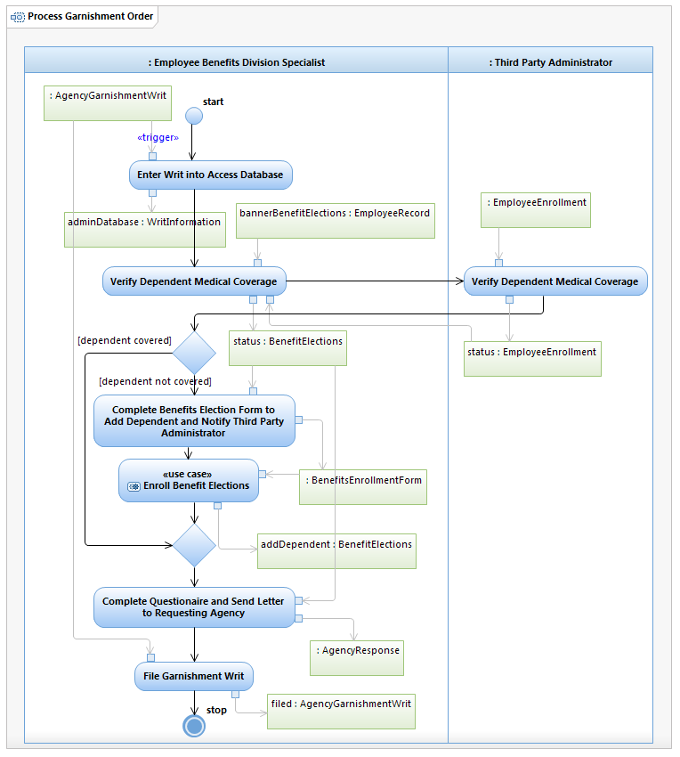

Use Case Model: Process Garnishment Order
Architect: Rob Byrd, Chief Enterprise IT Architect
Date Last Modified: 06/04/2012
User Review: Andrea Glasper, Benefits Specialist
Date:
When an Employee Benefits Division receives a court ordered writ to add children of COA employees to medical benefits, the Employee Benefits Division Specialist completes the Benefits Enrollment Form to add the children to the benefit. The deductions are entered into the payroll system (Banner) using deduction codes and the Third Party Administrator is notified of the benefit change.
Follow link to Role Definitions

Use Case Model: Process Garnishment Order
Follow link to Enroll Benefit Elections

Activity Model: Process Garnishment Order